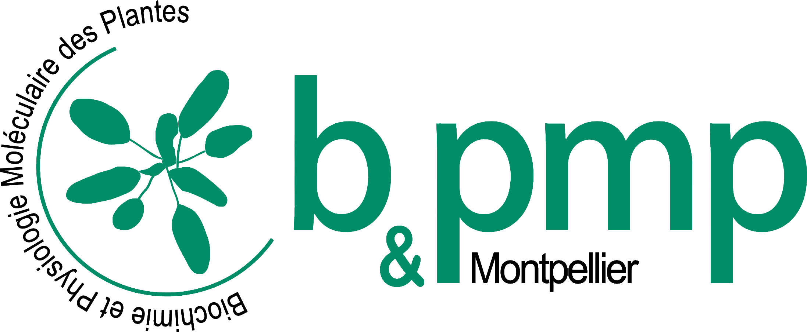

Océane Cassan
P.h.D student in bioiformatics - BPMP team SUPAGRO Montpellier SUPAGRO
Epigenomic and Genomic Regulatory Circuits Inference in Arabidopsis in response to nutritional starvation.

P.h.D student in bioiformatics - BPMP team SUPAGRO Montpellier SUPAGRO
Epigenomic and Genomic Regulatory Circuits Inference in Arabidopsis in response to nutritional starvation.
P.h.D project : Epigenomic and Genomic Regulatory Circuits Inference in Arabidopsis thaliana in response to climate change. Recent large scale study have shown that plants exposed to increasing levels of atmospheric carbon dioxyde tend to grow more, at the expense of their nutritonnal value. The aim of the project is statistically infer the gene regulatory network of the response to higher C02 in Arabidopsis thaliana, notably by integrating cell-type specific dynamic epigenomes (ATAC-Seq data) and transcriptomes (RNA-Seq data), as well as transcription factors/chromatin interaction data. Regulatory circuits will be used to infer new major regulatory modules and genes of the response to a climate-induced stress in Arabidopsis thaliana. Tutored by Dr Antoine Martin and Dr Sophie Lèbre.
Master internship (2019) : I developped machine learning models to predict the interactions between chromosomic regions in the human genome, based on CAGE data and 3C techniques. Internship report (French)

Engineering internship (2018) : Development of software tools for the 3D tracking of biological objects in label free images, Nanolive SA, Lausanne, Switzerland.